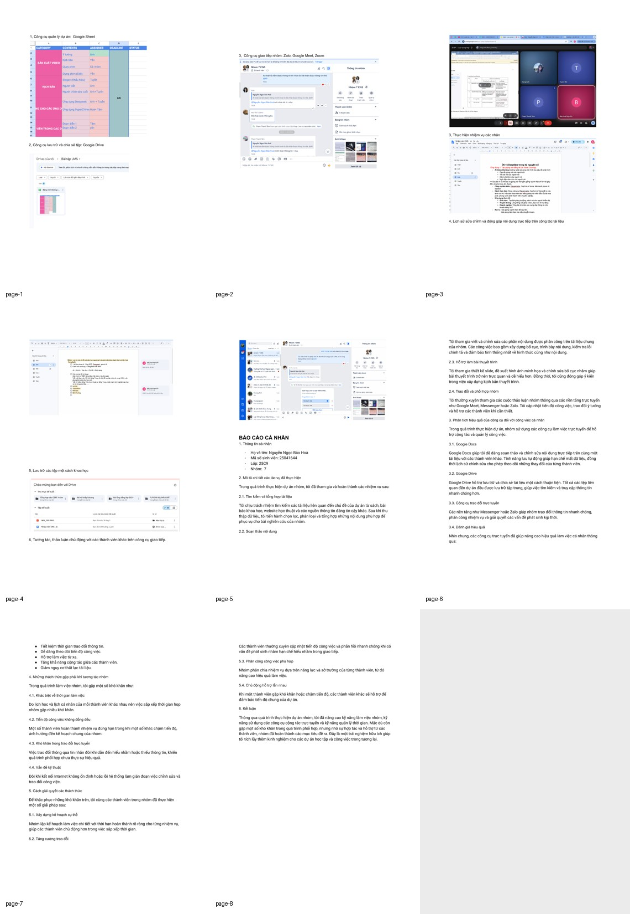
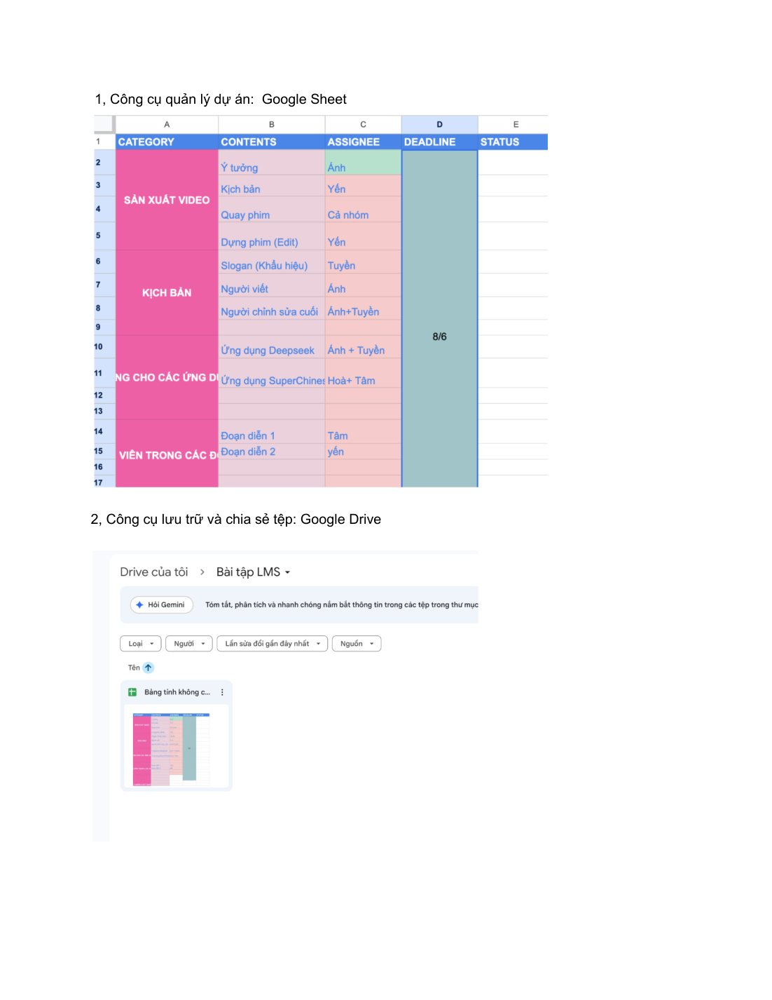
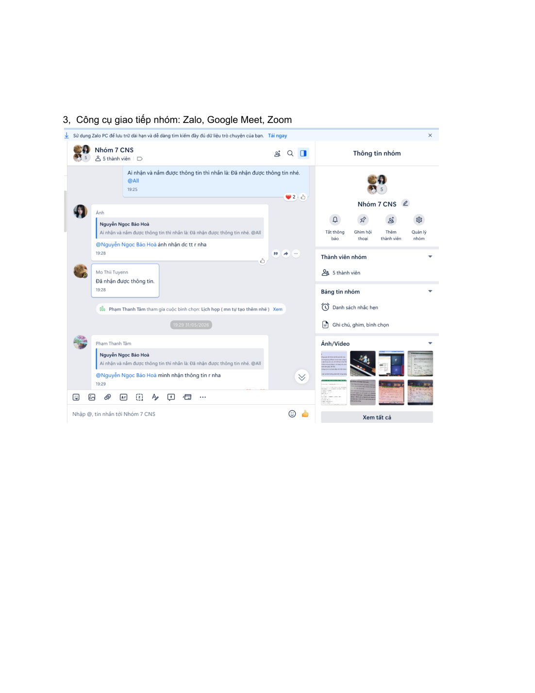
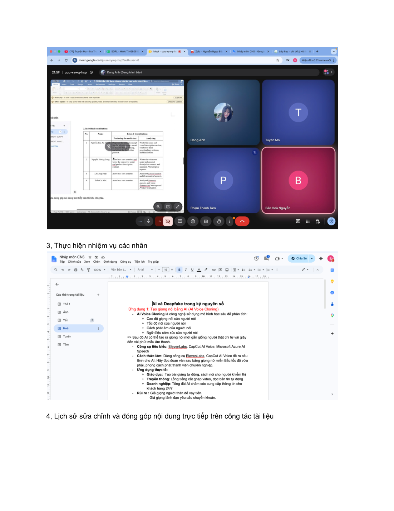
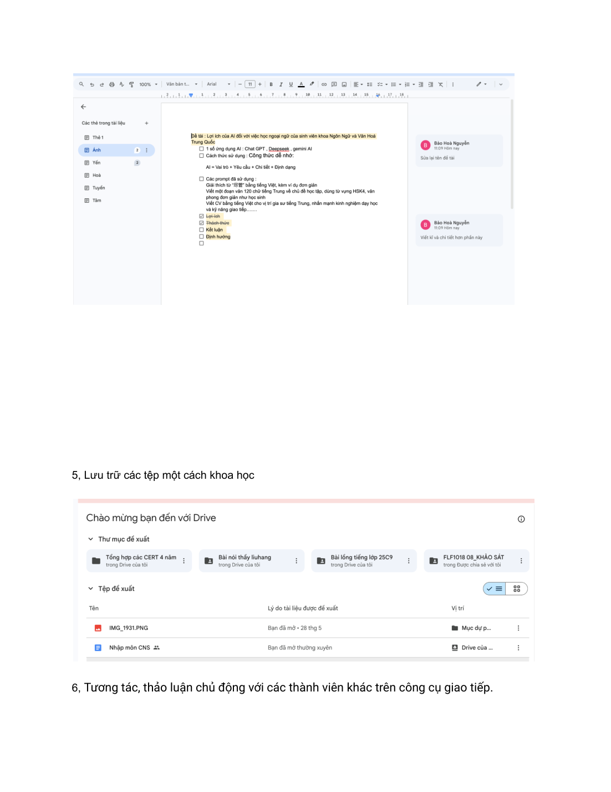
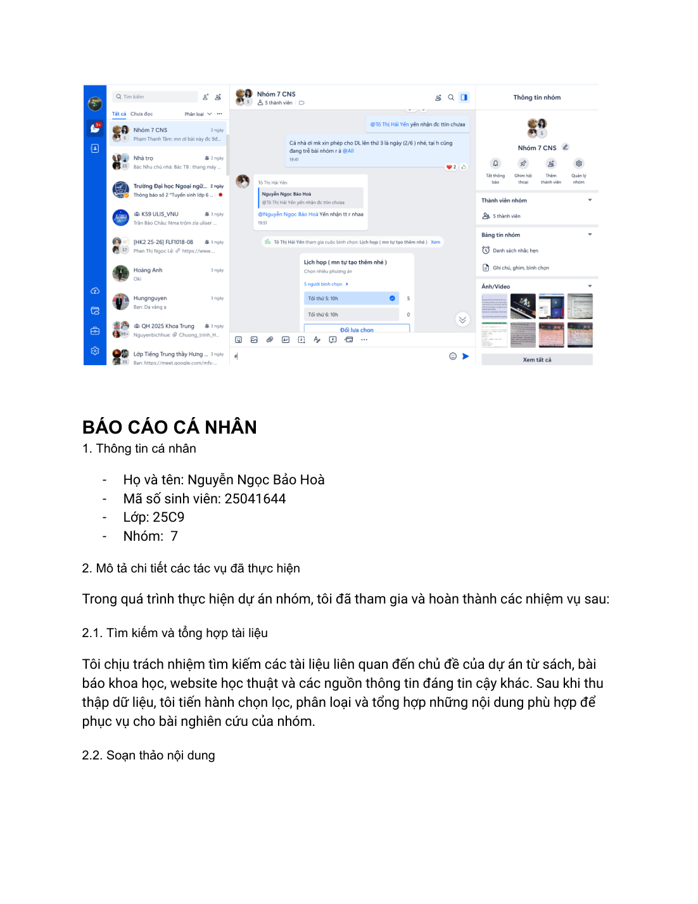
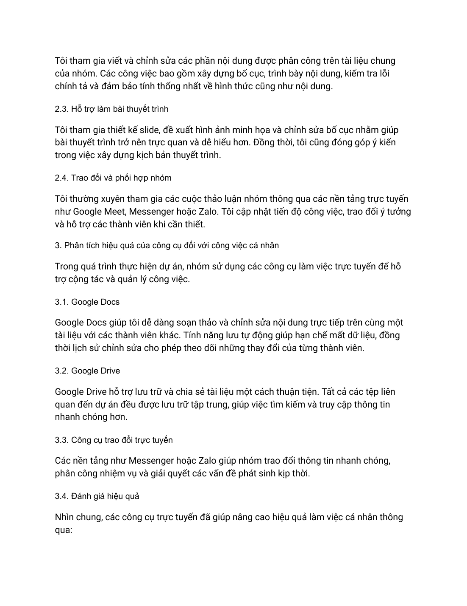
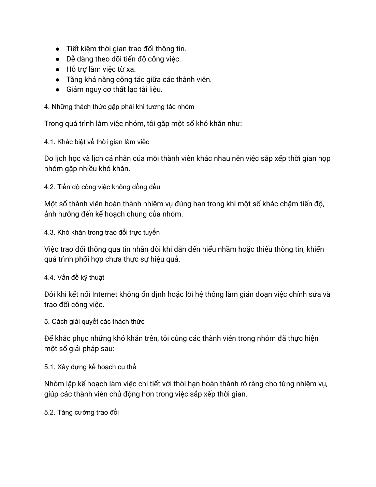
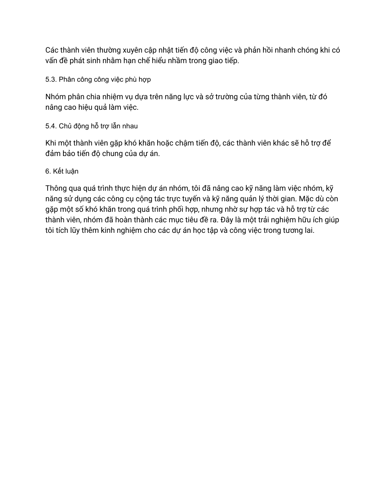

Bài làm mô tả quá trình mình tham gia dự án nhóm bằng các công cụ số như Google Sheet, Google Drive, Google Docs và nền tảng trao đổi trực tuyến như Zalo, Google Meet, Zoom. Nội dung nhấn mạnh vai trò cá nhân, minh chứng công việc và cách phối hợp với các thành viên khác.
Google DriveGoogle DocsZaloLàm việc nhóm

Khái quát bài làm
Ý tưởng và định hướng trình bày
Đây là phần thể hiện khá rõ năng lực tổ chức công việc cá nhân và phối hợp trong môi trường trực tuyến.
Trong phiên bản website, nội dung được viết lại bằng lời văn mạch lạc hơn để tránh lỗi font và giảm cảm giác sao chép nguyên văn từ tài liệu gốc. Mỗi phần đều giữ đúng tinh thần bài làm ban đầu, đồng thời sắp xếp theo nguyên tắc: phần chữ đi trước, ảnh minh chứng đi sau.
Phần 1
Công cụ sử dụng và minh chứng thao tác
Ở giai đoạn đầu, mình cùng nhóm sử dụng bảng tính và tài liệu trực tuyến để phân công công việc, cập nhật tiến độ và lưu trữ thông tin. Google Drive đóng vai trò như nơi lưu trữ tập trung, còn Google Docs và Google Sheet giúp nhóm chỉnh sửa nội dung và theo dõi nhiệm vụ theo thời gian thực.
Về giao tiếp, nhóm kết hợp các kênh như Zalo, Google Meet và Zoom để họp, nhắc việc và trao đổi khi có nội dung cần thống nhất nhanh.

Minh chứng 1 – tư liệu gốc được đặt ngay sau phần nội dung liên quan.

Minh chứng 2 – tư liệu gốc được đặt ngay sau phần nội dung liên quan.

Minh chứng 3 – tư liệu gốc được đặt ngay sau phần nội dung liên quan.

Minh chứng 4 – tư liệu gốc được đặt ngay sau phần nội dung liên quan.
Phần 2
Vai trò cá nhân trong dự án
Trong báo cáo cá nhân, mình trình bày bốn nhóm việc chính: tìm kiếm và tổng hợp tài liệu, soạn thảo nội dung, hỗ trợ thiết kế bài thuyết trình và phối hợp trao đổi với nhóm. Điều này cho thấy mình không chỉ tham gia một phần việc cố định mà còn góp sức ở nhiều khâu của dự án.
Mình cũng đánh giá hiệu quả của từng công cụ đối với công việc cá nhân. Các công cụ trực tuyến giúp tiết kiệm thời gian, tăng khả năng cộng tác, hỗ trợ làm việc từ xa và giảm nguy cơ thất lạc tài liệu.

Minh chứng 1 – tư liệu gốc được đặt ngay sau phần nội dung liên quan.

Minh chứng 2 – tư liệu gốc được đặt ngay sau phần nội dung liên quan.
Phần 3
Thách thức và cách khắc phục
Một số khó khăn nổi bật là lịch làm việc khác nhau giữa các thành viên, tiến độ không đồng đều, việc trao đổi qua tin nhắn đôi lúc thiếu rõ ràng và một vài trở ngại kỹ thuật như mạng không ổn định.
Để giải quyết, nhóm thống nhất kế hoạch rõ ràng, tăng cường cập nhật tiến độ, phân chia công việc theo thế mạnh và chủ động hỗ trợ nhau khi có thành viên gặp khó khăn. Đây là phần thể hiện rõ kỹ năng làm việc nhóm và khả năng thích ứng của mình.

Minh chứng 1 – tư liệu gốc được đặt ngay sau phần nội dung liên quan.

Minh chứng 2 – tư liệu gốc được đặt ngay sau phần nội dung liên quan.
Bảng tổng hợp
Vai trò của từng công cụ
Công cụ
Mục đích sử dụng
Đóng góp cá nhân
Google Drive
Lưu trữ và chia sẻ tệp
Sắp xếp tài liệu, truy cập và cập nhật tệp liên quan đến dự án
Google Docs / Google Sheet
Soạn thảo và quản lý công việc
Viết nội dung, chỉnh sửa, theo dõi phân công và tiến độ
Zalo / Google Meet / Zoom
Giao tiếp và họp nhóm
Trao đổi ý tưởng, thống nhất kế hoạch và hỗ trợ xử lý vấn đề phát sinh
Kết quả & cảm nhận
Điều mình rút ra sau bài tập
Qua dự án nhóm, mình cải thiện rõ kỹ năng phối hợp, quản lý thời gian và sử dụng công cụ trực tuyến. Trải nghiệm này giúp mình tự tin hơn khi tham gia các dự án học tập hoặc công việc trong môi trường số.